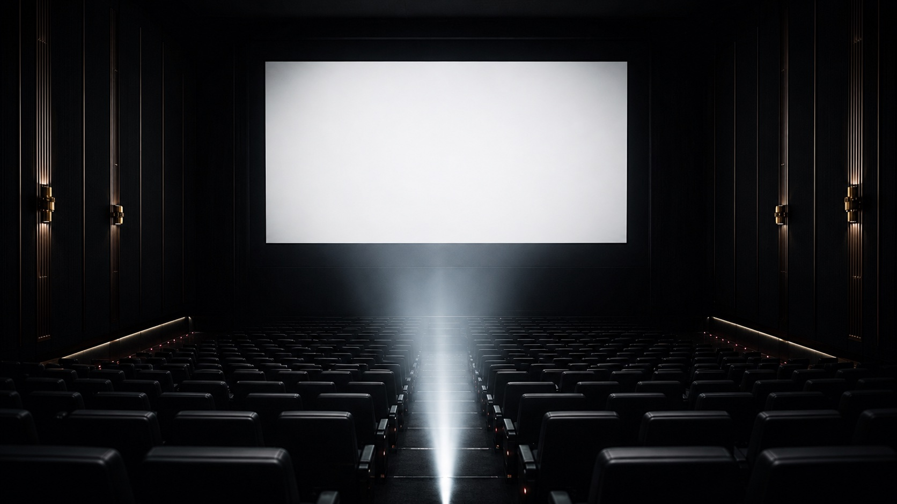

Our work
The screen is waiting.
Watch selected documentary, visual, and commercial work directed by the team at AKtion!
Stories brought to life.
Select a project to watch it without leaving the AKtion! experience.

Our work
Watch selected documentary, visual, and commercial work directed by the team at AKtion!
Select a project to watch it without leaving the AKtion! experience.